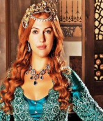
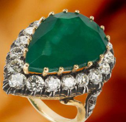
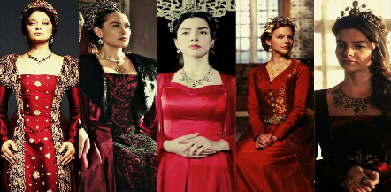

BIENVENIDOS A NUESTRA PAGINA
Aqui se conocera la historia de las mujeres mas poderosas del imperio otomono durante el siglo XVl año en el que goberno el sultan Suleiman el magnifico
Lo ultimo de nuestro blog
Sultana Maihrimah del Sol y la Luna
Sultana Nurbanu
Sultana Safiye
Sultana Kosem
Conoce su historia y su dominio e influencia en el poder

Sultana Hurrem

Un anillo de poder
Palacio de topkapi
